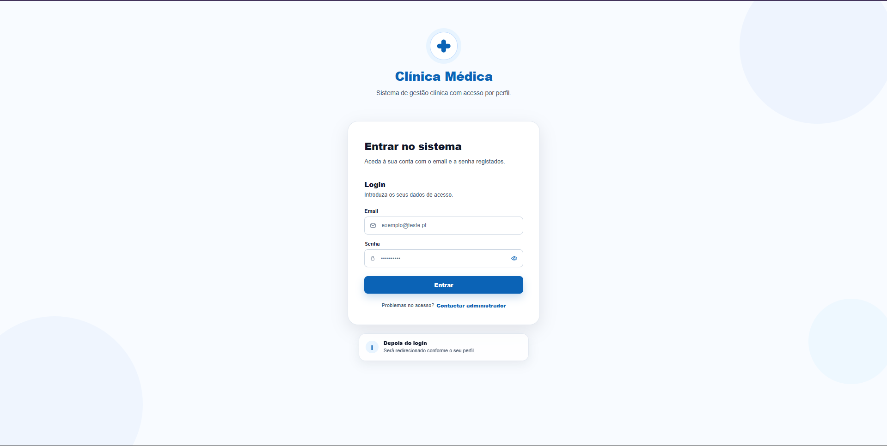
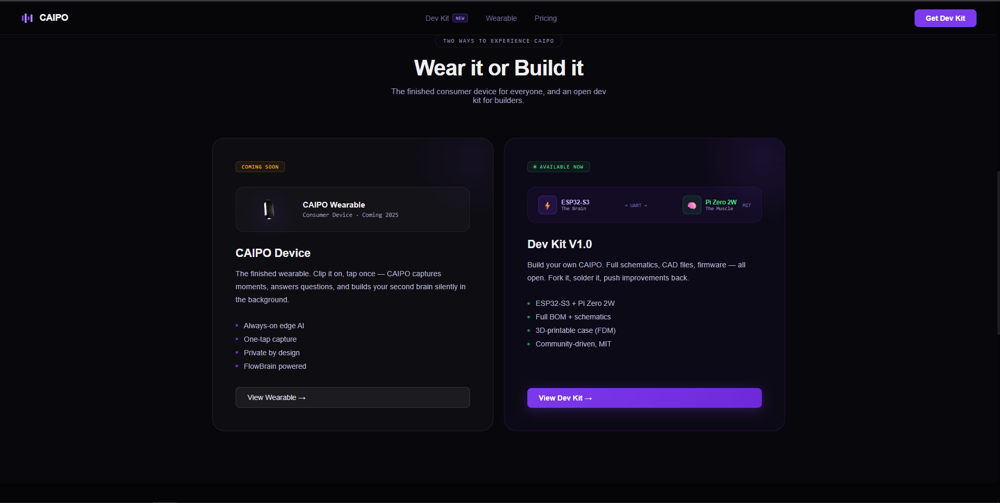

Clareza visual
Estruturas de conteúdo fáceis de percorrer, com hierarquia e ações bem definidas.
Web design · UI/UX · Frontend
Daniela Torres Almeida
Web Designer / UI Designer Frontend Developer
Combino Figma, pensamento UI/UX e desenvolvimento frontend para transformar conceitos e necessidades de negócio em experiências web responsivas, consistentes e utilizáveis.
Perfil
Tenho uma base criativa em artes e educação musical, complementada por experiência prática em UI/UX e frontend. Trabalho a hierarquia visual, a legibilidade e o comportamento responsivo sem perder de vista as limitações e possibilidades reais do browser.
A minha abordagem liga decisões de design a componentes implementáveis, testes entre dispositivos e melhoria iterativa. A experiência em equipas multidisciplinares reforçou a comunicação, a atenção ao detalhe, a adaptabilidade e o cumprimento de prazos.
Estruturas de conteúdo fáceis de percorrer, com hierarquia e ações bem definidas.
Soluções pensadas para desktop, tablet e mobile desde a estrutura inicial.
Interfaces alinhadas com HTML semântico, CSS reutilizável e interações acessíveis.
Competências principais
Uma combinação prática de design, frontend e validação, com foco na passagem entre intenção visual e execução.
Processo de design
Um fluxo flexível, ajustado ao contexto do projeto e orientado para decisões que permanecem coerentes durante a implementação.
Projetos selecionados
Uma seleção focada em hierarquia visual, componentes, experiência responsiva e implementação frontend.

Sistema editorial e visual para apresentar projetos e experiência de forma clara em diferentes tamanhos de ecrã.

Plataforma full-stack para organizar developers, projetos, tarefas Agile e programas internos.

Ponto de entrada para um sistema de gestão clínica com acesso por perfil.

Biblioteca navegável de padrões de interface para experimentar componentes e estados reutilizáveis.

Website público orientado para comunicar uma oferta de robótica através de uma experiência visual de elevado impacto.

Secções frontend para comunicar duas propostas de produto: um wearable e um kit para developers.
Figma e UI
Os ficheiros Figma não têm ligações públicas neste momento. As imagens mostram resultados visuais existentes e a relação documentada entre planeamento, hierarquia, componentes e implementação.
Da organização do dashboard e dos fluxos à composição da interface de autenticação.
Planeamento de formulário, feedback, orientação ao utilizador e estados de acesso.
Padrões reutilizáveis e comportamento verificável no browser.
Diferenciador
Conhecer o lado da implementação ajuda-me a propor interfaces realistas, a antecipar estados e a manter consistência quando o design chega ao browser.
Experiência relevante
FloLabs Innovations Group
O Portefólio Responsivo apresentado acima é um projeto pessoal e está separado desta experiência profissional.
Formação relevante
IEFP · Web Foundations
IEFP · Software Engineering
Udemy · QA & Testing
University of Leeds · QA & Testing
React, Angular, Java, C, Python/FastAPI, SQL e PostgreSQL complementam a minha capacidade de colaborar com equipas técnicas, mas não são o foco desta apresentação.
Contacto
Disponível para oportunidades de Web Design, UI Design e frontend em Portugal.